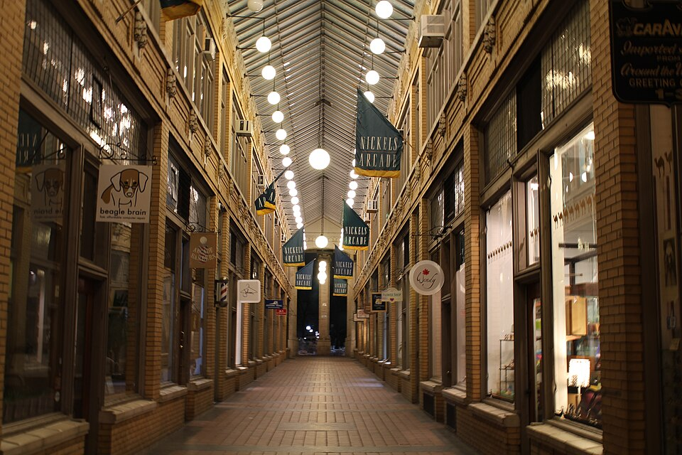

Welcome to the Ann Arbor Art Museum
The Ann Arbor Art Museum celebrates the art, history, neighborhoods, and creative communities of Ann Arbor, Michigan. Exhibits connect local places such as the Huron River, downtown Ann Arbor, Kerrytown, and the University of Michigan campus with larger conversations about art and culture.

About the Museum
The museum features rotating exhibitions, community programs, student learning opportunities, and events focused on art in everyday life. Visitors can explore paintings, photographs, public art, maps, posters,and objects connected to Ann Arbor’s cultural identity.
The museum welcomes residents, students, families, researchers, and visitors who want to learn more about the city through visual culture.
Featured Ann Arbor Themes
Exhibits often focus on places and traditions that shape life in Ann Arbor.
- The Huron River and local parks
- Downtown Ann Arbor streets, murals, and theaters
- Kerrytown markets, shops, and neighborhood design
- University of Michigan campus life and creative exchange

Museum Hours
The museum is open most days of the week, with extended hours on Thursday evenings. Visitors should check the exhibits, hours, and visit pages for more detailed information.
| Day | Hours | General Admission |
|---|---|---|
| Monday | Closed | Not available |
| Tuesday - Friday | 10:00 AM – 5:00 PM | $12 |
| Saturday | 9:00 AM – 6:00 PM | $14 |
| Sunday | 12:00 PM – 5:00 PM | $10 |
Plan a Visit
The museum is located near downtown Ann Arbor, close to restaurants, bookstores, public transportation, parks, and University of Michigan buildings. Visitors may want to allow extra travel time during football weekends, festivals, and major campus events.
For more details, visit the exhibits, hours, and planning pages using the navigation menu above.